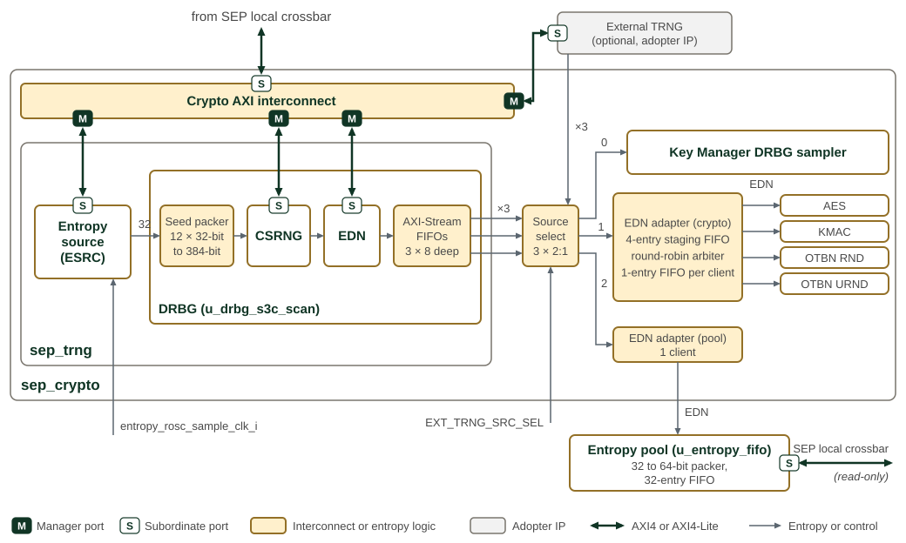

TRNG and DRBG
SEP separates physical entropy generation from deterministic random-data production and distribution. The internal path is:
-
Entropy Source (ESRC): ring-oscillator sampling, extraction, health checks and SHA-256 conditioning.
-
Cryptographically Secure Random Number Generator (CSRNG): an AES-CTR deterministic random bit generator (DRBG), seeded by ESRC.
-
Entropy Distribution Network (EDN): requests generated data from CSRNG and supplies the three SEP sink paths below.
Each sink can instead select an external stream. The source muxes sit after EDN, so external data bypasses the internal ESRC/CSRNG/EDN chain. Stream availability and FIPS tags do not establish entropy quality or certification.

SEP TRNG and DRBG entropy distribution reads left to right. Inside u_sep_trng, the entropy source
drives a 32-bit stream into the DRBG, whose seed packer collects twelve words into
each 384-bit CSRNG seed. EDN draws from CSRNG and fills one 8-entry AXI-Stream FIFO
per endpoint. The crypto AXI interconnect reaches the entropy source, CSRNG and
EDN registers, and the external TRNG register window. The source select holds one
2:1 mux per stream; each bit of EXT_TRNG_SRC_SEL chooses the internal DRBG (0)
or the external TRNG (1, the reset value) for its stream. Streams 0, 1 and 2 go
to the Key Manager DRBG sampler, to the crypto EDN adapter and to the pool EDN
adapter. The entropy pool sits in sep, outside sep_crypto, and packs the
32-bit words into a 32-entry FIFO of 64-bit words that software reads through the
SEP local crossbar. The CSRNG and EDN cores are OpenTitan IP; their internal
structure and register semantics are described in the
OpenTitan CSRNG and
EDN documentation.
The Programmer’s Guide gives the
programming guidance
for this block.
Entropy Generation
The internal ESRC samples ring oscillators, decorrelates/extracts their output and conditions it with SHA-256. Its gating health test observes the extracted 32-bit stream before SHA-256; per-generator health results provide additional monitoring. The health tests include repetition, adaptive-proportion and Markov checks. This is not a test of each DRBG output word.
Startup health testing gates release into the normal output path. The stream to DRBG is the ESRC output selected by its configuration: normally SHA-256 output, but compressor-bypass mode selects uncompressed generator data and disables the gating 32-bit health test. Do not treat bypass or diagnostic settings as equivalent to the qualified operating configuration.
Source characterization, health-test thresholds and permitted configurations belong to the entropy-source qualification. Conditioning does not by itself establish the amount of physical entropy in a seed. The source requirements are described by NIST SP 800-90B.
See Entropy Source for the source controls, startup status, health monitoring and configuration locks.
Distribution and Source Selection
SEP instantiates drbg with three AXI-Stream outputs and no direct native EDN
endpoints. The crypto and pool paths convert the selected streams back to
native EDN requests/responses outside that wrapper.
| Stream / select bit | Sink | Connection after the source mux |
|---|---|---|
0 |
Key Manager |
Direct stream to the KM DRBG sampler. |
1 |
AES, KMAC, OTBN |
|
2 |
Fabric entropy pool |
|
SEP_CPU_CTRL.EXT_TRNG_SRC_SEL selects each path independently: 0 selects
internal DRBG data and 1 selects external data. Its reset value is 0b111,
so all three paths initially select external inputs. The write-once-set
EXT_TRNG_SRC_SEL_LOCK prevents selection changes until the CPU-control bank
is reset; resetting the internal TRNG alone does not unlock it.
The selected source receives the sink’s ready signal. An unselected internal endpoint is backpressured and retains queued data; an unselected external input receives ready high and its beats are discarded. Selection is combinational: there is no switch-complete handshake or automatic flush of previously queued words.
| Signal | Direction / width | Meaning |
|---|---|---|
|
Source / 1 |
A word is available; transfer occurs with |
|
Sink / 1 |
The sink can accept the word. Hold valid data stable while stalled. |
|
Source / 32 |
One random-data word. |
|
Source / 4 |
Byte strobes. Internal endpoints drive |
|
Internal source / 1 |
Per-word FIPS provenance from EDN. The external input has no provenance bit; its source mux supplies a constant 1. |
There is no stream address: each physical output selects its sink path.
The pool packs received words for its 64-bit read aperture and reports
entropy_pool_low, entropy_pool_fill_stall and entropy_pool_err.
See SEP CPU Interrupt Vector Map for source assignments.
FIPS Provenance
The internal seed adapter attaches the provisional constant
DrbgCsrngSeedFipsProvisional = 1. CSRNG/EDN output provenance is retained
in each endpoint FIFO and forwarded through tuser into the native client’s
edn_fips. OTBN RND checks the returned tag and can report rnd_fips_chk_fail.
The external mux also attaches 1 unconditionally. Neither constant measures
source quality, validates an external producer, or establishes FIPS compliance;
qualification must justify the source and its operating configuration separately.
Reset and Recovery Boundaries
SEP_RESET_CTRL.SW_RESET_N.TRNG_SW_RST_N controls one internal reset domain:
ESRC, CSRNG, EDN and the DRBG endpoint queues. The TRNG sequencer isolates
all three host paths to drain and safely reset their converted AXI4-Lite CSR
transactions. This protects register transactions; it does not wait for entropy consumers to become idle.
| Block | Effect |
|---|---|
Post-mux crypto and pool adapters |
Synchronously clear pending and buffered state while the internal TRNG reset is active, even if external inputs are selected. |
Fabric entropy pool |
Clears its partial word, queued entropy and fill-stall state. Its AXI responder remains accessible; this is not a reset of that responder. |
AES, KMAC and OTBN |
Not reset by the TRNG coordinator. Native requests receive no acknowledgement during adapter clear and can resume after fresh data arrives. Their software resets cancel the corresponding adapter endpoints; OTBN owns RND and URND. |
Key Manager sampler |
Not scrubbed by TRNG reset: there is no post-mux adapter on this path. Keep KM idle before asserting TRNG reset; holding KM in software reset is sufficient. Hardware does not enforce this ordering. |
External TRNG CSR path |
Not included in the internal TRNG reset/isolation boundary. |
An in-progress KM sample can otherwise combine old and new stream data or report a stream error. The reset is therefore not an atomic restart of all entropy consumers, and after release the internal chain produces no data until ESRC, CSRNG and EDN are reinitialized. External crypto/pool traffic also pauses during adapter clear; it can resume when that clear ends, independently of internal generator initialization. The TRNG recovery sequence is in the Programmer’s Guide.
See Resetting the TRNG for the coordinator and recovery contract.
Scan Protection Boundary
The Class 2 entropy boundary starts at u_trng_wrapper_s3c_scan: its sequencer,
128-bit release stage and stream FIFOs retain seed material; the vendor core
uses its delivered DFT view. Within u_sep_crypto.u_sep_trng,
u_entropy_source_s3c_scan covers entropy FIFO/SHA-256 state and
u_drbg_s3c_scan covers CSRNG, EDN and endpoint state. The post-mux
u_axis_edn_crypto_s3c_scan covers staging outside the DRBG root.
Source-selection muxes are combinational, not scan assets.
DRBG Deterministic Random Bit Generator
This module is NIST 800-90A compliant. The module is based on the OpenTitan design.
The DRBG is seeded by the TRNG entropy stream and generates an arbitrary length bitstream which is used as foundational random data by the Key Generator.
This component uses the AES-CTR-DRBG version of the 800-90A.
The drbg top-level module wraps the OpenTitan CSRNG and EDN blocks with bus-protocol adapters. It accepts a raw 32-bit entropy stream from the entropy source, feeds it directly into the CSRNG seed path, and exposes AXI-Stream (and optionally native) EDN endpoints for deterministic random data delivery.
Parameters
The DRBG is configured through its seed FIFO depth, its AXI-Stream and native EDN endpoint counts, and the depth of each AXI-Stream endpoint FIFO.
The parameters of drbg are listed in drbg.
External Interfaces
The DRBG presents several interface types to the rest of the SEP subsystem.
DRBG external interfaces describes the entropy ingress, random-data endpoints, and control interfaces.
| Interface | Description |
|---|---|
Entropy ingress |
Fire-and-forget: |
EDN AXI-Stream |
|
Native EDN |
|
CSRNG AXI-Lite (64-bit) |
|
EDN AXI-Lite (64-bit) |
|
Life-cycle / OTP |
|
Alerts |
Two alert pairs (CSRNG and EDN) following the OpenTitan alert protocol. |
Interrupts |
CSRNG: command done, entropy request, hardware instance exception, fatal error. EDN: command done, fatal error. |
Seed Assembly
The drbg_csrng_seed_adapter receives one 32-bit entropy word per valid cycle directly from the entropy source (there is no upstream routing or distribution FIFO) and packs the words into full CSRNG-width seeds using an OpenTitan prim_packer_fifo. The packed seed is pushed into a shallow FIFO (default depth 1) along with a FIPS compliance flag set to a provisional value (DrbgCsrngSeedFipsProvisional = 1). The CSRNG pulls seeds through the standard entropy_src_hw_if handshake: es_req / es_ack / es_bits / es_fips. Because ingress is fire-and-forget with no backpressure, the producer must supply entropy no faster than the seed adapter can pack it.
OpenTitan CSRNG and EDN
The CSRNG and EDN instances are standard OpenTitan IP blocks. The CSRNG implements AES-CTR-DRBG per NIST SP 800-90A. It accepts entropy seeds from the hardware interface, processes firmware-issued commands (instantiate, reseed, generate, uninstantiate) through TL-UL, and serves random data to multiple hardware application ports. In this integration, EDN is connected to CSRNG hardware application port 0; any additional hardware application ports are tied off.
The EDN automates generate and reseed command sequences so that downstream consumers receive a continuous stream of random data without firmware intervention. The EDN endpoint interface uses a simple request/acknowledge handshake. The drbg_edn_axis_adapter converts this into the AXI-Stream protocol expected by the rest of the SEP fabric, buffering data in per-endpoint FIFOs.
Bus Protocol Adaptation
The CSRNG and EDN register interfaces use TL-UL, following the OpenTitan convention. The DRBG wrapper provides two levels of adaptation. The drbg_axil64_lane_adapter accepts 64-bit AXI4-Lite transactions from the SoC interconnect and narrows them to 32-bit AXI-Lite by selecting the appropriate data lane based on address bit [2]. Only aligned single-lane accesses with strobe 0x0F or 0xF0 are forwarded; all others are rejected with SLVERR. Write address, write data, and read address are independent channels. The adapter holds a single downstream 32-bit slot: it accepts each write half as soon as that half is not already pending, and it accepts a read only when neither write half is pending. When a read address and a complete write handshake in the same idle cycle, the adapter forwards the read and holds the write until it returns to idle. The downstream axi_lite_to_tlul bridge then converts 32-bit AXI-Lite into TL-UL for the CSRNG and EDN register blocks.
The CSRNG and EDN register maps are reported in the SEP detailed register map.
Memory Map and Register Reference
Memory Map
CSRNG and EDN occupy separate apertures in the SEP memory map. Their register offsets and access rules are given in the generated maps below.
Detailed Register Map
CSRNG Registers
Cryptographically Secure Random Number Generator
Takes entropy bits to produce cryptographically secure random numbers for consumption by hardware blocks and by software
Register List:
| Address | Name | Access | Description |
|---|---|---|---|
| 0x0 | INTR_STATE | RW | - |
| 0x4 | INTR_ENABLE | RW | - |
| 0x8 | INTR_TEST | W | - |
| 0xC | ALERT_TEST | W | - |
| 0x10 | REGWEN | RW | - |
| 0x14 | CTRL | RW | - |
| 0x18 | CMD_REQ | W | - |
| 0x1C | RESEED_INTERVAL | RW | - |
| 0x20 | RESEED_COUNTER_0 | R | - |
| 0x24 | RESEED_COUNTER_1 | R | - |
| 0x28 | RESEED_COUNTER_2 | R | - |
| 0x2C | SW_CMD_STS | R | - |
| 0x30 | GENBITS_VLD | R | - |
| 0x34 | GENBITS | R | - |
| 0x38 | INT_STATE_READ_ENABLE | RW | - |
| 0x3C | INT_STATE_READ_ENABLE_REGWEN | RW | - |
| 0x40 | INT_STATE_NUM | RW | - |
| 0x44 | INT_STATE_VAL | R | - |
| 0x48 | FIPS_FORCE | RW | - |
| 0x4C | HW_EXC_STS | RW | - |
| 0x50 | RECOV_ALERT_STS | RW | - |
| 0x54 | ERR_CODE | R | - |
| 0x58 | ERR_CODE_TEST | RW | - |
| 0x5C | MAIN_SM_STATE | R | - |
Register Details:
INTR_STATE
| Bits | Field | Access | Reset | Description |
|---|---|---|---|---|
| 31:4 | Reserved | - | - | Reserved |
| 3 | CS_FATAL_ERR | RW1C | 0x0 | Asserted when a FIFO error or a fatal alert occurs. Check the !!ERR_CODE register to get more information. |
| 2 | CS_HW_INST_EXC | RW1C | 0x0 | Asserted when a hardware-attached CSRNG instance encounters a command exception |
| 1 | CS_ENTROPY_REQ | RW1C | 0x0 | Asserted when a request for entropy has been made. |
| 0 | CS_CMD_REQ_DONE | RW1C | 0x0 | Asserted when a command request is completed. |
INTR_ENABLE
| Bits | Field | Access | Reset | Description |
|---|---|---|---|---|
| 31:4 | Reserved | - | - | Reserved |
| 3 | CS_FATAL_ERR | RW | 0x0 | Enable interrupt when !!INTR_STATE.cs_fatal_err is set. |
| 2 | CS_HW_INST_EXC | RW | 0x0 | Enable interrupt when !!INTR_STATE.cs_hw_inst_exc is set. |
| 1 | CS_ENTROPY_REQ | RW | 0x0 | Enable interrupt when !!INTR_STATE.cs_entropy_req is set. |
| 0 | CS_CMD_REQ_DONE | RW | 0x0 | Enable interrupt when !!INTR_STATE.cs_cmd_req_done is set. |
INTR_TEST
| Bits | Field | Access | Reset | Description |
|---|---|---|---|---|
| 31:4 | Reserved | - | - | Reserved |
| 3 | CS_FATAL_ERR | W | 0x0 | Write 1 to force !!INTR_STATE.cs_fatal_err to 1. |
| 2 | CS_HW_INST_EXC | W | 0x0 | Write 1 to force !!INTR_STATE.cs_hw_inst_exc to 1. |
| 1 | CS_ENTROPY_REQ | W | 0x0 | Write 1 to force !!INTR_STATE.cs_entropy_req to 1. |
| 0 | CS_CMD_REQ_DONE | W | 0x0 | Write 1 to force !!INTR_STATE.cs_cmd_req_done to 1. |
ALERT_TEST
| Bits | Field | Access | Reset | Description |
|---|---|---|---|---|
| 31:2 | Reserved | - | - | Reserved |
| 1 | FATAL_ALERT | W | 0x0 | Write 1 to trigger one alert event of this kind. |
| 0 | RECOV_ALERT | W | 0x0 | Write 1 to trigger one alert event of this kind. |
REGWEN
| Bits | Field | Access | Reset | Description |
|---|---|---|---|---|
| 31:1 | Reserved | - | - | Reserved |
| 0 | REGWEN | RW0C | 0x1 | When true, all writeable registers can be modified. When false, they become read-only. |
CTRL
| Bits | Field | Access | Reset | Description |
|---|---|---|---|---|
| 31:16 | Reserved | - | - | Reserved |
| 15:12 | FIPS_FORCE_ENABLE | RW | 0x9 | Setting this field to kMultiBitBool4True enables forcing the FIPS/CC compliance flag to true via the !!FIPS_FORCE register. |
| 11:8 | READ_INT_STATE | RW | 0x9 | Setting this field to kMultiBitBool4True will enable reading from the !!INT_STATE_VAL register. Reading the internal state of the enable instances will be enabled only if the otp_en_csrng_sw_app_read input vector is set to the enable encoding. Also, the !!INT_STATE_READ_ENABLE bit of the selected instance needs to be set to true for this to work. |
| 7:4 | SW_APP_ENABLE | RW | 0x9 | Setting this field to kMultiBitBool4True will enable reading from the !!GENBITS register. This application interface for software (register based) will be enabled only if the otp_en_csrng_sw_app_read input vector is set to the enable encoding. |
| 3:0 | ENABLE | RW | 0x9 | Setting this field to kMultiBitBool4True will enable the CSRNG module. The modules of the entropy complex may only be enabled and disabled in a specific order, see Programmers Guide for details. |
CMD_REQ
| Bits | Field | Access | Reset | Description |
|---|---|---|---|---|
| 31:0 | CMD_REQ | W | 0x0 | Writing this request with defined CSRNG commands will initiate all possible CSRNG actions. The application interface must wait for the "ack" to return before issuing new commands. |
RESEED_INTERVAL
| Bits | Field | Access | Reset | Description |
|---|---|---|---|---|
| 31:0 | RESEED_INTERVAL | RW | 0xFFFFFFFF | Setting this field will set the number of generate requests that can be made to CSRNG before a reseed request needs to be made. This register supports a maximum of 2^32 requests between reseeds. This register will be compared to a counter, which counts the number of generate commands between reseed or instantiate commands. If the counter reaches the value of this register, the violating command will be acknowledged with a status error. If the violating command was issued by a HW instance, an interrupt will be triggered. |
RESEED_COUNTER_0
| Bits | Field | Access | Reset | Description |
|---|---|---|---|---|
| 31:0 | RESEED_COUNTER_0 | R | 0x0 | Reseed Counter indicating the number of completed Generate requests since the last Instantiate or Reseed command. |
RESEED_COUNTER_1
| Bits | Field | Access | Reset | Description |
|---|---|---|---|---|
| 31:0 | RESEED_COUNTER_0 | R | 0x0 | For RESEED_COUNTER1 |
RESEED_COUNTER_2
| Bits | Field | Access | Reset | Description |
|---|---|---|---|---|
| 31:0 | RESEED_COUNTER_0 | R | 0x0 | For RESEED_COUNTER2 |
SW_CMD_STS
| Bits | Field | Access | Reset | Description |
|---|---|---|---|---|
| 31:6 | Reserved | - | - | Reserved |
| 5:3 | CMD_STS | R | 0x0 | This field represents the status code returned with the application command ack. It is updated each time a command ack is asserted on the internal application interface for software use. To check whether a command was successful, wait for !!INTR_STATE.CS_CMD_REQ_DONE or !!SW_CMD_STS.CMD_ACK to be high and then check the value of this field. |
| 2 | CMD_ACK | R | 0x0 | This one bit field indicates when a SW command has been acknowledged by the CSRNG. It is set to low each time a new command is written to !!CMD_REQ. The field is set to high once a SW command request has been acknowledged by the CSRNG. 0b0: The last SW command has not been acknowledged yet. 0b1: The last SW command has been acknowledged. In case of a generate command the acknowledgement goes high after all of the requested entropy is consumed. |
| 1 | CMD_RDY | R | 0x0 | This bit indicates when the command interface is ready to accept commands. Before starting to write a new command to !!SW_CMD_REQ, this field needs to be polled. 0b0: CSRNG is not ready to accept commands or the last command hasn't been acked yet. 0b1: CSRNG is ready to accept the next command. |
| 0 | Reserved | - | - | Reserved |
GENBITS_VLD
| Bits | Field | Access | Reset | Description |
|---|---|---|---|---|
| 31:2 | Reserved | - | - | Reserved |
| 1 | GENBITS_FIPS | R | - | This bit is set when genbits are FIPS/CC compliant. |
| 0 | GENBITS_VLD | R | - | This bit is set when genbits are available on this application interface after a generate command has been issued. |
GENBITS
| Bits | Field | Access | Reset | Description |
|---|---|---|---|---|
| 31:0 | GENBITS | R | - | Reading this register will get the generated bits that were requested with the generate request. This register must be read four times for each request made. For example, an application command generate request with a `clen` value of 4 requires this register to be read 16 times to get all of the data out of the FIFO path. Note that for !!GENBITS to be able to deliver random numbers, also !!CTRL.SW_APP_ENABLE needs to be set to `kMultiBitBool4True`. In addition, the otp_en_csrng_sw_app_read input needs to be set to `kMultiBitBool8True`. Otherwise, the register reads as 0. |
INT_STATE_READ_ENABLE
| Bits | Field | Access | Reset | Description |
|---|---|---|---|---|
| 31:3 | Reserved | - | - | Reserved |
| 2:0 | INT_STATE_READ_ENABLE | RW | 0x7 | Per-instance internal state read enable. Defines whether the internal state of the corresponding instance is readable via !!INT_STATE_VAL. Note that for !!INT_STATE_VAL to provide read access to the internal state, also !!CTRL.READ_INT_STATE needs to be set to `kMultiBitBool4True`. In addition, the otp_en_csrng_sw_app_read input needs to be set to `kMultiBitBool8True`. |
INT_STATE_READ_ENABLE_REGWEN
| Bits | Field | Access | Reset | Description |
|---|---|---|---|---|
| 31:1 | Reserved | - | - | Reserved |
| 0 | INT_STATE_READ_ENABLE_REGWEN | RW0C | 0x1 | INT_STATE_READ_ENABLE register configuration enable bit. If this is cleared to 0, the INT_STATE_READ_ENABLE register cannot be written anymore. |
INT_STATE_NUM
| Bits | Field | Access | Reset | Description |
|---|---|---|---|---|
| 31:4 | Reserved | - | - | Reserved |
| 3:0 | INT_STATE_NUM | RW | 0x0 | Setting this field will set the number for which internal state can be selected for a read access. Up to 16 internal state values can be chosen from this register. The actual number of valid internal state fields is set by parameter NumHwApps plus 1 software app. For those selections that point to reserved locations (greater than NumHwApps plus 1), the returned value will be zero. Writing this register will also reset the internal read pointer for the !!INT_STATE_VAL register. Note: This register should be read back after being written to ensure that the !!INT_STATE_VAL read back is accurate. |
INT_STATE_VAL
| Bits | Field | Access | Reset | Description |
|---|---|---|---|---|
| 31:0 | INT_STATE_VAL | R | - | Reading this register will dump out the contents of the selected internal state field. Since the internal state field is 448 bits wide, it will require 14 reads from this register to gather the entire field. Once 14 reads have been done, the internal read pointer (selects 32 bits of the 448 bit field) will reset to zero. The !!INT_STATE_NUM can be re-written at this time (internal read pointer is also reset), and then another internal state field can be read. Note that for !!INT_STATE_VAL to provide read access to the internal state, also !!CTRL.READ_INT_STATE needs to be set to `kMultiBitBool4True`. In addition, the otp_en_csrng_sw_app_read input needs to be set to `kMultiBitBool8True`. Also, the !!INT_STATE_READ_ENABLE bit of the selected instance needs to be set to true for this to work. Otherwise, the register reads as 0. |
FIPS_FORCE
| Bits | Field | Access | Reset | Description |
|---|---|---|---|---|
| 31:3 | Reserved | - | - | Reserved |
| 2:0 | FIPS_FORCE | RW | 0x0 | Force the FIPS/CC compliance flag of individual instances to true. This allows CSRNG to set the output FIPS/CC compliance flag to true despite running in fully deterministic mode (flag0 being true). This can be useful e.g. for known-answer testing through entropy consumers accepting FIPS/CC compliant entropy only, or when firmware is used to derive FIPS/CC compliant entropy seeds. After setting a particular bit to 1, the FIPS/CC compliance flag of the corresponding instance will be forced to true upon the next Instantiate or Reseed command. Note that for this to work, !!CTRL.FIPS_FORCE_ENABLE needs to be set to kMultiBitBool4True. |
HW_EXC_STS
| Bits | Field | Access | Reset | Description |
|---|---|---|---|---|
| 31:16 | Reserved | - | - | Reserved |
| 15:0 | HW_EXC_STS | RW0C | 0x0 | Reading this register indicates whether one of the CSRNG HW instances has encountered an exception. Each bit corresponds to a particular hardware instance, with bit 0 corresponding to instance HW0, bit 1 corresponding to instance HW1, and so forth. (To monitor the status of requests made to the SW instance, check the !!SW_CMD_STS register). Writing a zero to this register resets the status bits. |
RECOV_ALERT_STS
| Bits | Field | Access | Reset | Description |
|---|---|---|---|---|
| 31:16 | Reserved | - | - | Reserved |
| 15 | CMD_STAGE_RESEED_CNT_ALERT | RW0C | 0x0 | This bit is set when the maximum number of generate requests between reseeds is exceeded. The invalid generate command is ignored and CSRNG continues to operate. Writing a zero resets this status bit. |
| 14 | CMD_STAGE_INVALID_CMD_SEQ_ALERT | RW0C | 0x0 | This bit is set when an out of order command is received by the main state machine. This happens when an instantiate command is sent for a state that was already instantiated or when any command other than instantiate is sent for a state that wasn't instantiated yet. The invalid command is ignored and CSRNG continues to operate. Writing a zero resets this status bit. |
| 13 | CMD_STAGE_INVALID_ACMD_ALERT | RW0C | 0x0 | This bit is set when an unsupported/illegal CSRNG command is received by the main state machine. The invalid command is ignored and CSRNG continues to operate. Writing a zero resets this status bit. |
| 12 | CS_BUS_CMP_ALERT | RW0C | 0x0 | This bit is set when the software application port genbits bus value is equal to the prior valid value on the bus, indicating a possible attack. Writing a zero resets this status bit. |
| 11:5 | Reserved | - | - | Reserved |
| 4 | ACMD_FLAG0_FIELD_ALERT | RW0C | 0x0 | This bit is set when the FLAG0 field in the Application Command is set to a value other than kMultiBitBool4True or kMultiBitBool4False. Writing a zero resets this status bit. |
| 3 | FIPS_FORCE_ENABLE_FIELD_ALERT | RW0C | 0x0 | This bit is set when the FIPS_FORCE_ENABLE field in the !!CTRL register is set to a value other than kMultiBitBool4True or kMultiBitBool4False. Writing a zero resets this status bit. |
| 2 | READ_INT_STATE_FIELD_ALERT | RW0C | 0x0 | This bit is set when the READ_INT_STATE field in the !!CTRL register is set to a value other than kMultiBitBool4True or kMultiBitBool4False. Writing a zero resets this status bit. |
| 1 | SW_APP_ENABLE_FIELD_ALERT | RW0C | 0x0 | This bit is set when the SW_APP_ENABLE field in the !!CTRL register is set to a value other than kMultiBitBool4True or kMultiBitBool4False. Writing a zero resets this status bit. |
| 0 | ENABLE_FIELD_ALERT | RW0C | 0x0 | This bit is set when the ENABLE field in the !!CTRL register is set to a value other than kMultiBitBool4True or kMultiBitBool4False. Writing a zero resets this status bit. |
ERR_CODE
| Bits | Field | Access | Reset | Description |
|---|---|---|---|---|
| 31 | Reserved | - | - | Reserved |
| 30 | FIFO_STATE_ERR | R | 0x0 | This bit will be set to one when any of the source bits (bits 0 through 15 of this this register) are asserted as a result of an error pulse generated from any FIFO where both the empty and full status bits are set. This bit will stay set until the next reset. |
| 29 | FIFO_READ_ERR | R | 0x0 | This bit will be set to one when any of the source bits (bits 0 through 15 of this this register) are asserted as a result of an error pulse generated from any empty FIFO that has received a read pulse. This bit will stay set until the next reset. |
| 28 | FIFO_WRITE_ERR | R | 0x0 | This bit will be set to one when any of the source bits (bits 0 through 15 of this this register) are asserted as a result of an error pulse generated from any full FIFO that has been received a write pulse. This bit will stay set until the next reset. |
| 27 | Reserved | - | - | Reserved |
| 26 | CTR_ERR | R | 0x0 | This bit will be set to one when a mismatch in any of the hardened counters has been detected. This error will signal a fatal alert, and also an interrupt if enabled. This bit will stay set until the next reset. |
| 25 | AES_CIPHER_SM_ERR | R | 0x0 | This bit will be set to one when an AES fatal error has been detected. This error will signal a fatal alert, and also an interrupt if enabled. This bit will stay set until the next reset. |
| 24:23 | Reserved | - | - | Reserved |
| 22 | CTR_DRBG_SM_ERR | R | 0x0 | This bit will be set to one when an illegal state has been detected for the ctr_drbg state machine. This error will signal a fatal alert, and also an interrupt if enabled. This bit will stay set until the next reset. |
| 21 | MAIN_SM_ERR | R | 0x0 | This bit will be set to one when an illegal state has been detected for the main state machine. This error will signal a fatal alert, and also an interrupt if enabled. This bit will stay set until the next reset. |
| 20 | CMD_STAGE_SM_ERR | R | 0x0 | This bit will be set to one when an illegal state has been detected for the command stage state machine. This error will signal a fatal alert, and also an interrupt if enabled. This bit will stay set until the next reset. |
| 19:2 | Reserved | - | - | Reserved |
| 1 | SFIFO_GENBITS_ERR | R | 0x0 | This bit will be set to one when an error has been detected for the command stage genbits FIFO. The type of error is reflected in the type status bits (bits 28 through 30 of this register). This bit will stay set until the next reset. |
| 0 | SFIFO_CMD_ERR | R | 0x0 | This bit will be set to one when an error has been detected for the command stage command FIFO. The type of error is reflected in the type status bits (bits 28 through 30 of this register). This bit will stay set until the next reset. |
ERR_CODE_TEST
| Bits | Field | Access | Reset | Description |
|---|---|---|---|---|
| 31:5 | Reserved | - | - | Reserved |
| 4:0 | ERR_CODE_TEST | RW | 0x0 | Setting this field will set the bit number for which an error will be forced in the hardware. This bit number is that same one found in the !!ERR_CODE register. The action of writing this register will force an error pulse. The sole purpose of this register is to test that any error properly propagates to either an interrupt or an alert. |
MAIN_SM_STATE
| Bits | Field | Access | Reset | Description |
|---|---|---|---|---|
| 31:6 | Reserved | - | - | Reserved |
| 5:0 | MAIN_SM_STATE | R | 0x37 | This is the state of the CSRNG main state machine. See the RTL file `csrng_main_sm` for the meaning of the values. |
EDN Registers
Entropy Distribution Network
Distributes random numbers produced by CSRNG to hardware blocks
Register List:
| Address | Name | Access | Description |
|---|---|---|---|
| 0x0 | INTR_STATE | RW | - |
| 0x4 | INTR_ENABLE | RW | - |
| 0x8 | INTR_TEST | W | - |
| 0xC | ALERT_TEST | W | - |
| 0x10 | REGWEN | RW | - |
| 0x14 | CTRL | RW | - |
| 0x18 | BOOT_INS_CMD | RW | - |
| 0x1C | BOOT_GEN_CMD | RW | - |
| 0x20 | SW_CMD_REQ | W | - |
| 0x24 | SW_CMD_STS | R | - |
| 0x28 | HW_CMD_STS | R | - |
| 0x2C | RESEED_CMD | W | - |
| 0x30 | GENERATE_CMD | W | - |
| 0x34 | MAX_NUM_REQS_BETWEEN_RESEEDS | RW | - |
| 0x38 | RECOV_ALERT_STS | RW | - |
| 0x3C | ERR_CODE | R | - |
| 0x40 | ERR_CODE_TEST | RW | - |
| 0x44 | MAIN_SM_STATE | R | - |
Register Details:
INTR_STATE
| Bits | Field | Access | Reset | Description |
|---|---|---|---|---|
| 31:2 | Reserved | - | - | Reserved |
| 1 | edn_fatal_err | RW1C | 0x0 | Asserted when a FIFO error occurs. |
| 0 | edn_cmd_req_done | RW1C | 0x0 | Asserted when a software CSRNG request has completed. |
INTR_ENABLE
| Bits | Field | Access | Reset | Description |
|---|---|---|---|---|
| 31:2 | Reserved | - | - | Reserved |
| 1 | edn_fatal_err | RW | 0x0 | Enable interrupt when !!INTR_STATE.edn_fatal_err is set. |
| 0 | edn_cmd_req_done | RW | 0x0 | Enable interrupt when !!INTR_STATE.edn_cmd_req_done is set. |
INTR_TEST
| Bits | Field | Access | Reset | Description |
|---|---|---|---|---|
| 31:2 | Reserved | - | - | Reserved |
| 1 | edn_fatal_err | W | 0x0 | Write 1 to force !!INTR_STATE.edn_fatal_err to 1. |
| 0 | edn_cmd_req_done | W | 0x0 | Write 1 to force !!INTR_STATE.edn_cmd_req_done to 1. |
ALERT_TEST
| Bits | Field | Access | Reset | Description |
|---|---|---|---|---|
| 31:2 | Reserved | - | - | Reserved |
| 1 | fatal_alert | W | 0x0 | Write 1 to trigger one alert event of this kind. |
| 0 | recov_alert | W | 0x0 | Write 1 to trigger one alert event of this kind. |
REGWEN
| Bits | Field | Access | Reset | Description |
|---|---|---|---|---|
| 31:1 | Reserved | - | - | Reserved |
| 0 | REGWEN | RW0C | 0x1 | When true, the CTRL can be written by software. When false, this field read-only. Defaults true, write zero to clear. Note that this needs to be cleared after initial configuration at boot in order to lock in the listed register settings. |
CTRL
| Bits | Field | Access | Reset | Description |
|---|---|---|---|---|
| 31:16 | Reserved | - | - | Reserved |
| 15:12 | CMD_FIFO_RST | RW | 0x9 | Setting this field to kMultiBitBool4True clears the two command FIFOs: the RESEED_CMD FIFO and the GENERATE_CMD FIFO. This field must be set to the reset state by software before any further commands can be issued to these FIFOs. |
| 11:8 | AUTO_REQ_MODE | RW | 0x9 | Setting this field to kMultiBitBool4True enables auto request mode. In this mode, EDN automatically sends `generate` and `reseed` command requests to the CSRNG application interface. The purpose of this mode is to continuously deliver entropy to endpoints without firmware intervention. For this to work, firmware has to 1) configure the !!GENERATE_CMD, !!RESEED_CMD, and !!MAX_NUM_REQS_BETWEEN_RESEEDS registers, and 2) to issue the first `instantiate` command via the !!SW_CMD_REQ register. Once this command has been acknowledged by CSRNG, the first `generate` command is sent out automatically, and a `reseed` command is sent after every MAX_NUM_REQS_BETWEEN_RESEEDS number of `generate` commands. Note that the BOOT_REQ_MODE field takes precedence over this field: If both fields are set, EDN enters boot-time request mode. If none of the fields are set, EDN enters Software Port Mode upon enabling. |
| 7:4 | BOOT_REQ_MODE | RW | 0x9 | Setting this field to kMultiBitBool4True enables the boot-time request mode. In this mode, EDN automatically sends a boot-time request to the CSRNG application interface. The purpose of this mode is to request entropy as fast as possible after reset, and during chip boot time. Note that this takes precedence over the AUTO_REQ_MODE field: If both fields are set, EDN enters boot-time request mode. If none of the fields are set, EDN enters Software Port Mode upon enabling. |
| 3:0 | EDN_ENABLE | RW | 0x9 | Setting this field to kMultiBitBool4True enables the EDN module. The modules of the entropy complex may only be enabled and disabled in a specific order, see Programmers Guide for details. |
BOOT_INS_CMD
| Bits | Field | Access | Reset | Description |
|---|---|---|---|---|
| 31:0 | BOOT_INS_CMD | RW | 0x901 | This field is used as the value for the `instantiate` command at boot time. See [Command Header](../../csrng/doc/theory_of_operation.md#command-header) for the meaning of the individual bits. Note that the hardware only supports a value of 0 for the `clen` field. If `clen` has a different value, EDN will hang. Fixing this requires disabling and restarting both EDN and CSRNG. |
BOOT_GEN_CMD
| Bits | Field | Access | Reset | Description |
|---|---|---|---|---|
| 31:0 | BOOT_GEN_CMD | RW | 0xFFF003 | This field is used as the value for the `generate` command at boot time. See [Command Header](../../csrng/doc/theory_of_operation.md#command-header) for the meaning of the individual bits. Note that the hardware only supports a value of 0 for the `clen` field. If `clen` has a different value, EDN will hang. Fixing this requires disabling and restarting both EDN and CSRNG. |
SW_CMD_REQ
| Bits | Field | Access | Reset | Description |
|---|---|---|---|---|
| 31:0 | SW_CMD_REQ | W | - | Any CSRNG action can be initiated by writing a CSRNG command to this register. Before any write operation to this register, firmware must read !!SW_CMD_STS to check whether EDN is ready to receive a new command or the next word of a previously started command. While !!CTRL.AUTO_REQ_MODE is set, only the first instantiate command has any effect. After that command has been processed, writes to this register will have no effect on operation, until !!CTRL.AUTO_REQ_MODE is de-asserted and the state machine of EDN enters the `SwPortMode` state. Refer to the [CSRNG documentation](../../csrng/doc/theory_of_operation.md#general-command-format) for details on the command format. |
SW_CMD_STS
| Bits | Field | Access | Reset | Description |
|---|---|---|---|---|
| 31:6 | Reserved | - | - | Reserved |
| 5:3 | CMD_STS | R | 0x0 | This field represents the status code returned with the CSRNG application command ack. It is updated each time a SW command is acknowledged by CSRNG. To check whether a command was successful, wait for !!INTR_STATE.EDN_CMD_REQ_DONE or !!SW_CMD_STS.CMD_ACK to be high and then check the value of this field. A description of the command status types can be found [here](../../csrng/doc/registers.md#sw_cmd_sts--cmd_sts). |
| 2 | CMD_ACK | R | 0x0 | This one bit field indicates when a SW command has been acknowledged by the CSRNG. It is set to low each time a new command is written to !!SW_CMD_REQ. The field is set to high once a SW command request has been acknowledged by the CSRNG. 0b0: The last SW command has not been acknowledged yet. 0b1: The last SW command has been acknowledged. |
| 1 | CMD_RDY | R | 0x0 | This bit indicates when the EDN is ready to accept the next command. Before starting to write a new command to !!SW_CMD_REQ, this field needs to be polled. 0b0: The EDN is not ready to accept commands or the last command hasn't been acked yet. 0b1: The EDN is ready to accept the next command. |
| 0 | CMD_REG_RDY | R | 0x0 | This bit indicates when !!SW_CMD_REQ is ready to accept the next word. This bit has to be polled before each word of a command is written to !!SW_CMD_REQ. 0b0: The EDN is not ready to accept the next word yet. 0b1: The EDN is ready to accept the next word. |
HW_CMD_STS
| Bits | Field | Access | Reset | Description |
|---|---|---|---|---|
| 31:10 | Reserved | - | - | Reserved |
| 9:7 | CMD_STS | R | 0x0 | This field represents the status code returned with the CSRNG application command ack. It is updated each time a HW command is acknowledged by CSRNG. A description of the command status types can be found [here](../../csrng/doc/registers.md#sw_cmd_sts--cmd_sts). |
| 6 | CMD_ACK | R | 0x0 | This one bit field indicates when a HW command has been acknowledged by the CSRNG. It is set to low each time a new command is sent to the CSRNG. The field is set to high once a HW command request has been acknowledged by the CSRNG. 0b0: The last HW command has not been acknowledged yet. 0b1: The last HW command has been acknowledged. |
| 5:2 | CMD_TYPE | R | 0x0 | This field contains the application command type of the hardware controlled command issued last. The application command selects one of five operations to perform. A description of the application command types can be found [here](../../csrng/doc/theory_of_operation.md#command-description). |
| 1 | AUTO_MODE | R | 0x0 | This one bit field indicates whether the EDN is in the hardware controlled part of auto mode. The instantiate command is issued via SW interface and is thus not part of the hardware controlled part of auto mode. 0b0: The EDN is not in the hardware controlled part of auto mode. 0b1: The EDN is in the hardware controlled part of auto mode. |
| 0 | BOOT_MODE | R | 0x0 | This one bit field indicates whether the EDN is in the hardware controlled boot mode. 0b0: The EDN is not in boot mode. 0b1: The EDN is in boot mode. |
RESEED_CMD
| Bits | Field | Access | Reset | Description |
|---|---|---|---|---|
| 31:0 | RESEED_CMD | W | - | Writing this register will fill a FIFO with up to 13 command words (32b words). When running in auto request mode, this FIFO is used to automatically send out a `reseed` command to the CSRNG application interface after every MAX_NUM_REQS_BETWEEN_RESEEDS number of `generate` commands. See [General Command Format](../../csrng/doc/theory_of_operation.md#general-command-format) for details about the command format. Note that the number of additional data words provided must match the value of the `clen` field of the first word. Otherwise, undefined behavior may result. If more than 13 entries are written to the FIFO, they are ignored and EDN signals an `edn_fatal_err` interrupt as well as a fatal alert. |
GENERATE_CMD
| Bits | Field | Access | Reset | Description |
|---|---|---|---|---|
| 31:0 | GENERATE_CMD | W | - | Writing this register will fill a FIFO with up to 13 command words (32b words). When running auto request mode, this FIFO is used to automatically send out `generate` commands to the CSRNG application interface. See [General Command Format](../../csrng/doc/theory_of_operation.md#general-command-format) for details about the command format. Note that the number of additional data words provided must match the value of the `clen` field of the first word. Otherwise, undefined behavior may result. If more than 13 entries are written to the FIFO, they are ignored and EDN signals an `edn_fatal_err` interrupt as well as a fatal alert. |
MAX_NUM_REQS_BETWEEN_RESEEDS
| Bits | Field | Access | Reset | Description |
|---|---|---|---|---|
| 31:0 | MAX_NUM_REQS_BETWEEN_RESEEDS | RW | 0x0 | Setting this field will set the number of `generate` command requests that are made to CSRNG before a reseed request is made. This value only has meaning when running in auto request mode. This register supports a maximum of 2^32 `generate` requests between reseeds. This register will be used by a counter that counts down, triggering an automatic `reseed` request when it reaches zero. Note that this value must be chosen smaller than or equal to the value configured in the [`RESEED_INTERVAL` register of CSRNG](../../csrng/doc/registers.md#reseed-interval). |
RECOV_ALERT_STS
| Bits | Field | Access | Reset | Description |
|---|---|---|---|---|
| 31:14 | Reserved | - | - | Reserved |
| 13 | CSRNG_ACK_ERR | RW0C | 0x0 | This bit is set when the CSRNG returns an acknowledgement where the status signal is non-zero. Writing a zero resets this status bit. |
| 12 | EDN_BUS_CMP_ALERT | RW0C | 0x0 | This bit is set when the interal entropy bus value is equal to the prior valid value on the bus, indicating a possible attack. Writing a zero resets this status bit. |
| 11:4 | Reserved | - | - | Reserved |
| 3 | CMD_FIFO_RST_FIELD_ALERT | RW0C | 0x0 | This bit is set when the CMD_FIFO_RST field is set to an illegal value, something other than kMultiBitBool4True or kMultiBitBool4False. Writing a zero resets this status bit. |
| 2 | AUTO_REQ_MODE_FIELD_ALERT | RW0C | 0x0 | This bit is set when the !!CTRL.AUTO_REQ_MODE field is set to an illegal value, something other than kMultiBitBool4True or kMultiBitBool4False. Writing a zero resets this status bit. |
| 1 | BOOT_REQ_MODE_FIELD_ALERT | RW0C | 0x0 | This bit is set when the BOOT_REQ_MODE field is set to an illegal value, something other than kMultiBitBool4True or kMultiBitBool4False. Writing a zero resets this status bit. |
| 0 | EDN_ENABLE_FIELD_ALERT | RW0C | 0x0 | This bit is set when the EDN_ENABLE field is set to an illegal value, something other than kMultiBitBool4True or kMultiBitBool4False. Writing a zero resets this status bit. |
ERR_CODE
| Bits | Field | Access | Reset | Description |
|---|---|---|---|---|
| 31 | Reserved | - | - | Reserved |
| 30 | FIFO_STATE_ERR | R | 0x0 | This bit will be set to one when any of the source bits (bits 0 through 1 of this register) are asserted as a result of an error pulse generated from any FIFO where both the empty and full status bits are set or in case of error conditions inside the hardened counters. This bit will stay set until the next reset. |
| 29 | FIFO_READ_ERR | R | 0x0 | This bit will be set to one when any of the source bits (bits 0 through 1 of this register) are asserted as a result of an error pulse generated from any empty FIFO that has received a read pulse. This bit will stay set until the next reset. |
| 28 | FIFO_WRITE_ERR | R | 0x0 | This bit will be set to one when any of the source bits (bits 0 through 1 of this register) are asserted as a result of an error pulse generated from any full FIFO that has received a write pulse. This bit will stay set until the next reset. |
| 27:23 | Reserved | - | - | Reserved |
| 22 | EDN_CNTR_ERR | R | 0x0 | This bit will be set to one when a hardened counter has detected an error condition. This error will signal a fatal alert. This bit will stay set until the next reset. |
| 21 | EDN_MAIN_SM_ERR | R | 0x0 | This bit will be set to one when an illegal state has been detected for the EDN main stage state machine. This error will signal a fatal alert. This bit will stay set until the next reset. |
| 20 | EDN_ACK_SM_ERR | R | 0x0 | This bit will be set to one when an illegal state has been detected for the EDN ack stage state machine. This error will signal a fatal alert. This bit will stay set until the next reset. |
| 19:2 | Reserved | - | - | Reserved |
| 1 | SFIFO_GENCMD_ERR | R | 0x0 | This bit will be set to one when an error has been detected for the generate command FIFO. The type of error is reflected in the type status bits (bits 28 through 30 of this register). When this bit is set, a fatal error condition will result. This bit will stay set until the next reset. |
| 0 | SFIFO_RESCMD_ERR | R | 0x0 | This bit will be set to one when an error has been detected for the reseed command FIFO. The type of error is reflected in the type status bits (bits 28 through 30 of this register). When this bit is set, a fatal error condition will result. |
ERR_CODE_TEST
| Bits | Field | Access | Reset | Description |
|---|---|---|---|---|
| 31:5 | Reserved | - | - | Reserved |
| 4:0 | ERR_CODE_TEST | RW | 0x0 | Setting this field will set the bit number for which an error will be forced in the hardware. This bit number is that same one found in the !!ERR_CODE register. The action of writing this register will force an error pulse. The sole purpose of this register is to test that any error properly propagates to either an interrupt or an alert. |
MAIN_SM_STATE
| Bits | Field | Access | Reset | Description |
|---|---|---|---|---|
| 31:9 | Reserved | - | - | Reserved |
| 8:0 | MAIN_SM_STATE | R | 0xC1 | This is the state of the EDN main state machine. See the RTL file `edn_main_sm` for the meaning of the values. |